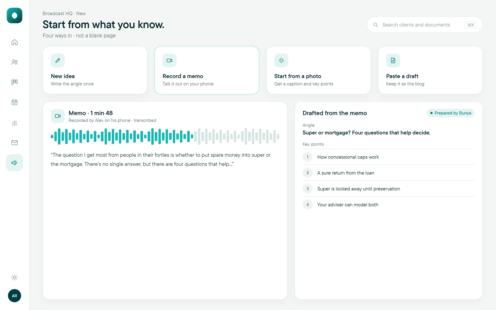
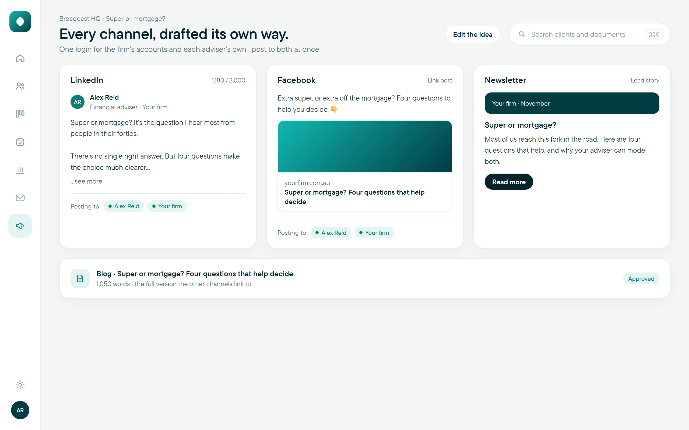
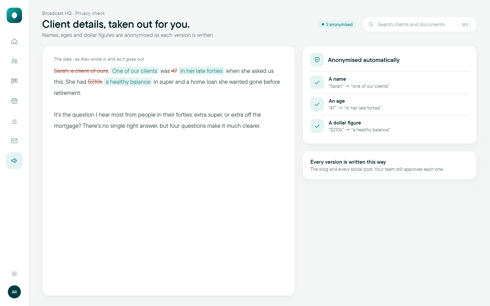
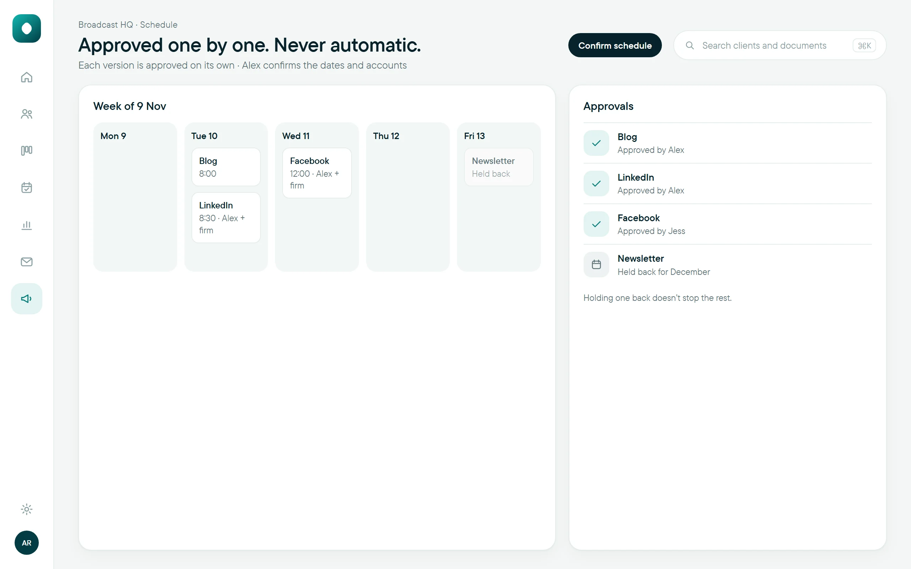

Broadcast HQOne idea. Every channel.
Write it once and Bunya prepares a version for each channel.
$390 a month. Draft prices, A$ ex GST.Start with one idea.
Get a blog, LinkedIn, Facebook and newsletter version.
Each one is approved before it goes out.
How it works
- 1Idea
Write the angle once, or start from a memo, a photo or a draft.
- 2Draft
A version for each channel, in your firm’s voice.
- 3Check
Names, ages and dollar figures are anonymised as each version is written.
- 4Approve
Each version is approved on its own, then scheduled. Nothing publishes automatically.
Publishes to your blog and all the main social channels, on the firm’s accounts and each adviser’s own, with one login.
Up close




Type an idea, record a memo on your phone, drop in a photo or paste a draft. Never a blank page.
Today, and with Broadcast HQ
What’s included
Questions
Does anything publish without review?
No. Every version is approved by your team first, and nothing publishes automatically.
Which channels can we use?
Your blog and all the main social channels, published straight from Broadcast HQ once each version is approved.
Can advisers post to their own accounts?
Yes. The firm’s socials and each adviser’s own connect with one login, so an adviser can post to theirs and the firm’s at the same time.
Do we need it to deliver advice?
No. Broadcast HQ is an optional app. Command Centre delivers advice without it.
Goes well with
Broadcast HQ, ready when you are.
$390 a month.